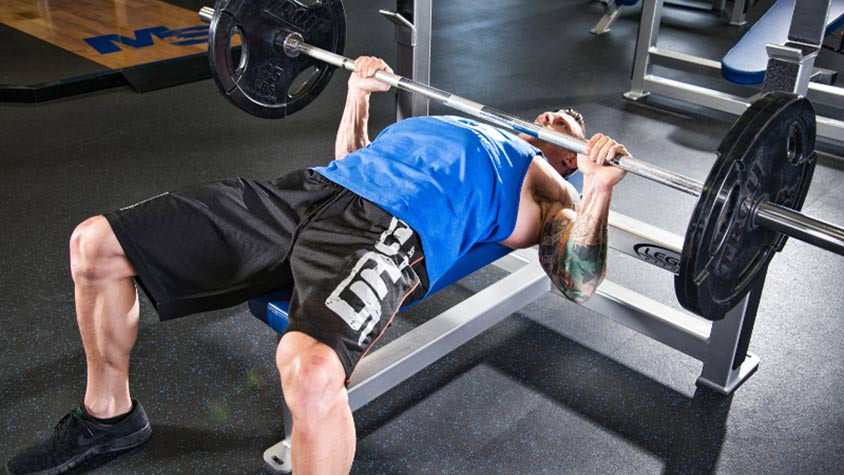
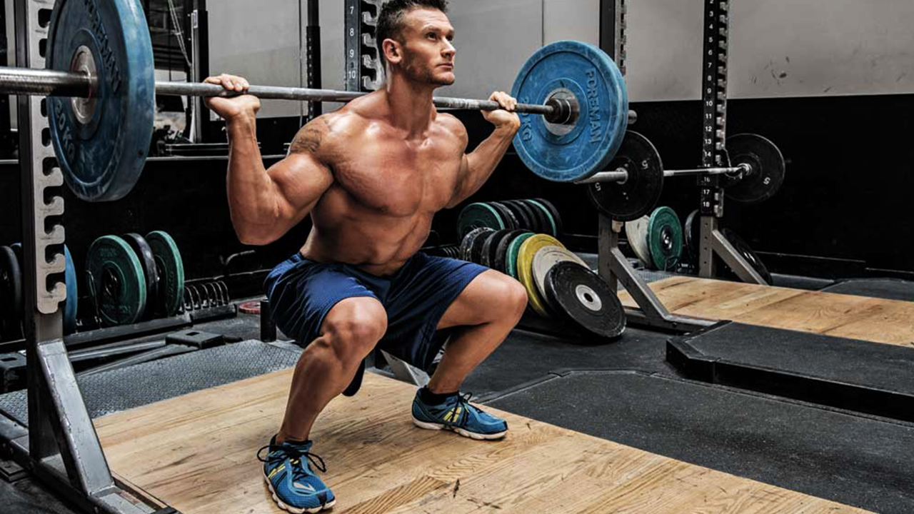
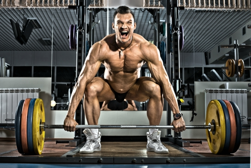

Gyakorlatok
Ezen az oldalon a konditermi edzés 3 legalapvetőbb gyakorlatáról olvashatsz egy kis útmutatást, hogy miként végezheted őket helyesen.
Fekvenyomás
A fekvenyomás egy alapvető súlyemelési gyakorlat, amely a felsőtest izmait célozza meg, különösen a mellizomot, a tricepszet és a vállizmokat. A helyes kivitelezés kulcsfontosságú annak érdekében, hogy elkerüljük a sérüléseket és maximalizáljuk az eredményeket.
Kiinduló pozíció:
- Feküdj háton egy padon úgy, hogy a szemed a rúd alá essen.
- Fogd meg a súlyzót vállszélességű fogással és emeld fel a mellkasod fölé.
Kéz és Kar Pozíciója:
- A kezeid vállszélességben legyenek elhelyezve a súlyzón, és a tenyér irányítsa előre vagy kissé kifelé.
- A könyököd 90 fokos szögben hajoljon.
Testtartás:
- A lábaid szorosan legyenek a padon és a talajon. A lábfejeddel erőteljesen lökj ki magad mögüled.
- Az alsó hátadnak, a farizmaidnak és a vállaidnak szorosan kapcsolódnia kell a padhoz.
Lassú és Kontrollált Mozgás:
- Lassan engedd le a súlyzót a mellkasod felé, közben tartsd a könyököd a testhez közel.
- A súlyzót lassan és kontrolláltan emeld fel, miközben a mellizmodat használod.
Légzés:
- Lélegezz ki, amikor felnyomod a súlyt, és lélegezz be, amikor leereszted.
Teljes Mozgástartomány:
- Mindig végezd el a gyakorlatot a teljes mozgástartományban. A súlyzót engedd le addig, amíg a karod 90 fokos szöget zár be.
Figyelj a Biztonságra:
- A súlyzót mindig tartsd ellenőrzés alatt, és ne felejtsd el használni a súlyzókötést a súlyok rögzítéséhez.
Ez az alapvető összefoglaló segít abban, hogy a fekvenyomást helyesen végezd el, azonban mindig fontos, hogy egy személyi edző vagy tapasztalt tréner segítségét kérd, különösen kezdetben, hogy biztosan helyes technikát alkalmazz.
Guggolás
A guggolás egy alapvető, ám rendkívül hatékony teljes test edzés, amely az alsó test izmait (comb, farizom) és a mag izmait is megmozgatja. A helyes kivitelezés kulcsfontosságú a hatékony erősítés és az esetleges sérülések elkerülése érdekében. Itt van egy részletesebb összefoglaló a helyes guggolási technikáról:
Kiinduló pozíció:
- Állj egyenesen, lábaid vállszélességben, a súly középen a csuklya izmon helyezkedik el, melyet kezeiddel szélesen fogva támasztasz.
- A lábujjak enyhén kifelé mutassanak.
Testtartás
- Tartsd a gerinced egyenesen, a vállak hátra vontak, szem előre nézve.
- A mellkas legyen kiemelkedő, és a hasizom feszített.
Mozgás-Lehajlás:
- Hátul húzd hátra a csípődet, miközben hajolsz lefelé, mintha egy székre ülnél.
- Hajlítsd meg a térded, de ügyelj arra, hogy ne lépj túl a lábujjaidon.
Mozgás-Felállás:
- Erősen nyomj ki a lábaddal a talajt, és emelkedj felálló pozícióba.
- A súlyközéppontod maradjon stabil és középen.
Légzés:
- Lélegezz be, amikor lehajolsz, és kilélegezz, amikor felállsz.
Teljes Mozgástartomány:
- Az ideális mozgástartományt a combok párhuzamosak a talajjal jelzi.
- Kezdd könnyű súlyokkal, majd növeld fokozatosan.
Figyelj a Biztonságra:
- Figyelj a térd irányára; ne engedd, hogy befelé hajoljanak.
- Ha kezdetben tanulod meg a technikát, kérj segítséget egy tapasztalt edzőtől vagy trénertől.
Helyes guggolási technikával nem csak az izmaid erősödnek meg hatékonyan, hanem a gerinc és az ízületek védelme is biztosított. Ne siess, és mindig ellenőrizd a technikád, hogy biztosan és sérülésmentesen végezd a gyakorlatot.
Felhúzás-Deadlift
A felhúzás egy nagyon hatékony súlyemelési gyakorlat, amely főként a hátsó láb- és farizmokat, a hát izmait és a vállakat célozza meg. A helyes kivitelezés elengedhetetlen a maximális eredmények és a sérülések elkerülése érdekében. Itt van egy rövid összefoglaló a helyes felhúzási technikáról:
Kiinduló pozíció:
- Állj egyenesen, a lábak vállszélességben, a súlyzó a lábad előtt a talajon.
- Fogd meg a súlyzót széles fogással, a kezek kívül legyenek a vállaknál.
Testtartás
- Tartsd a gerinced egyenesen, vállak hátra vonva, szem előre nézve.
- A hátad ne legyen kerek, hanem természetes görbületét meg kell őrizni.
Mozgás-Felhúzás:
- Csípő hátra tolása, térdhajlítás minimálisan.
- Emeld fel a súlyzót a lábad előtt, a tested mellé. A hátsó izmokat használd a súly emeléséhez
Mozgás-Lehelyezés:
- Lassan engedd le a súlyzót a talajra, ügyelve arra, hogy a gerinced ne veszítse el az egyenes vonalát.
Légzés:
- Lélegezz ki a felhúzásnál, lélegezz be a leengedésnél.
Teljes Mozgástartomány:
- A súlyzót tartsd közel a testedhez, és húzd fel addig, amíg vállmagasságba érsz.
- A térdhajlítást minimálisra csökkentsd.
Figyelj a Biztonságra:
- Mindig tartsd a gerinced egyenesen, és az emelés során a súlyközéppontod középen.
Fontos: Kezdetben szakértő segítségét kérjed, és mindig ellenőrizd a technikádat, hogy biztosan és hatékonyan végezd a gyakorlatot.